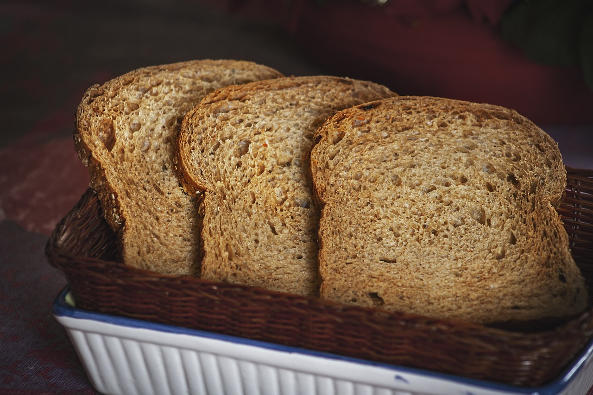
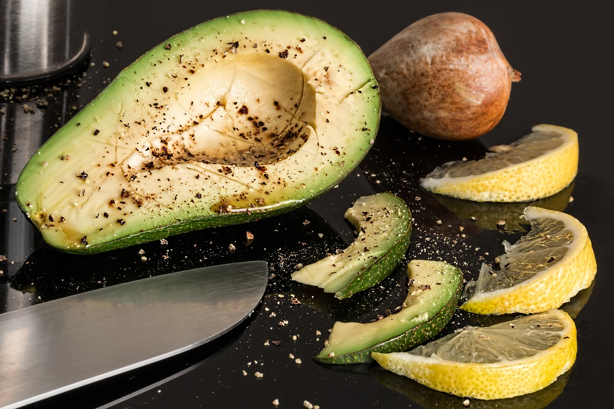
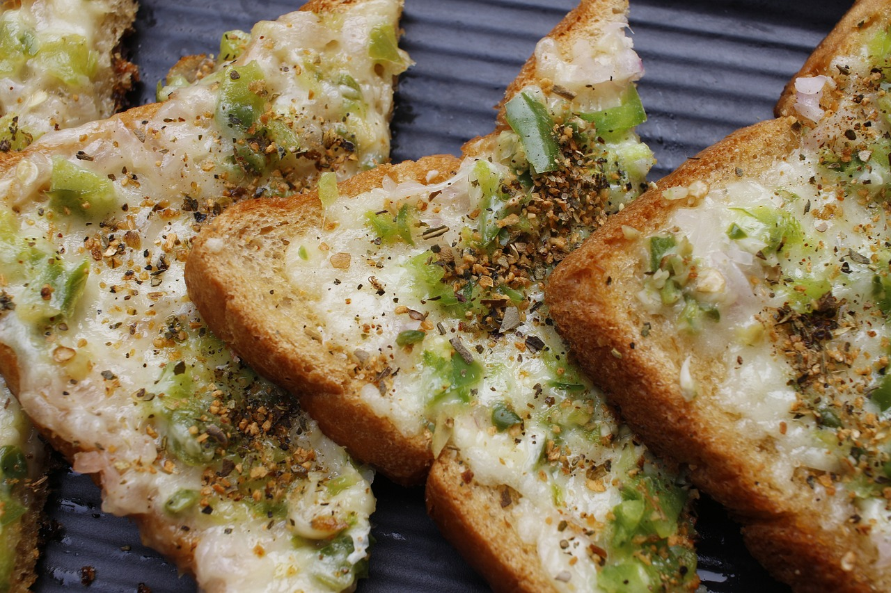

Создатель: Несолёная Полина Сергеевна
Все авторские права защищены
Новогодние рецепты от нашего талантливого сообщества
этот шедевр был сотворён руками Несолёной Полины в студии Iteen Academy
Возможно размещение рекламы

Новогодние рецепты для каждого
1. Для приготовления тостов с авокадо и красной рыбой возьмите любой хлеб - желательно свежий, чуточку подсолнечного масла, творожный сыр, спелый авокадо, лимон и малосольную красную рыбу, немного зелени и черного молотого перчика для подачи.
2. Слегка обжарьте ломтики хлеба на слегка смазанной маслом или сухой сковороде.
3. Разомните плод вилкой.Полейте лимонным соком, чтобы авокадо не потемнел.
4. Добавьте пару ложек творожного сыра (в данном случае это Каймак).Щедро промажьте творожно-авокадовой массой ломтики поджаренного хлеба или просто выложите намазку по чайной ложке с горкой.
5. Наслаждайтесь вкусом!!
Создатель: Несолёная Полина Сергеевна
Все авторские права защищены
Новогодние рецепты от нашего талантливого сообщества
этот шедевр был сотворён руками Несолёной Полины в студии Iteen Academy
Возможно размещение рекламы